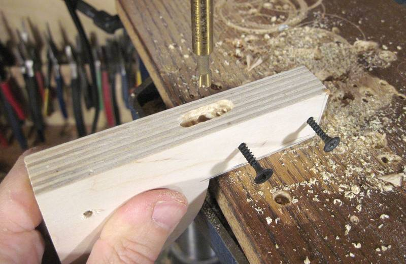
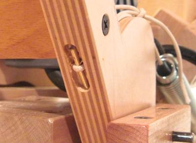
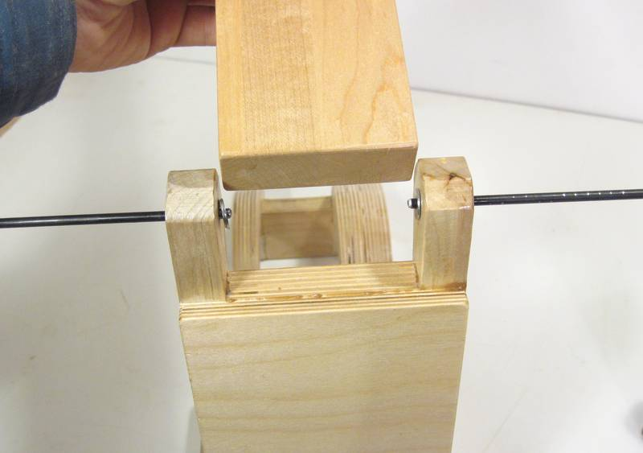
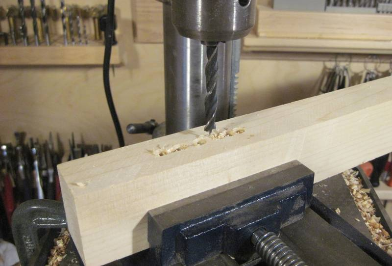
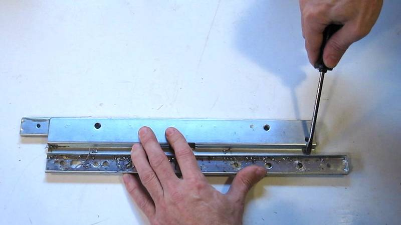
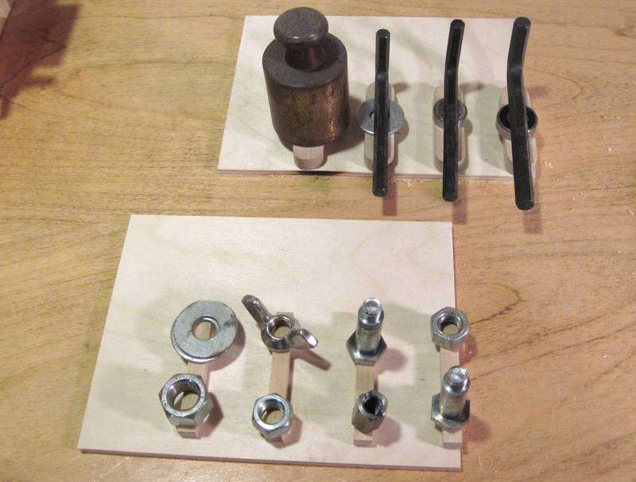
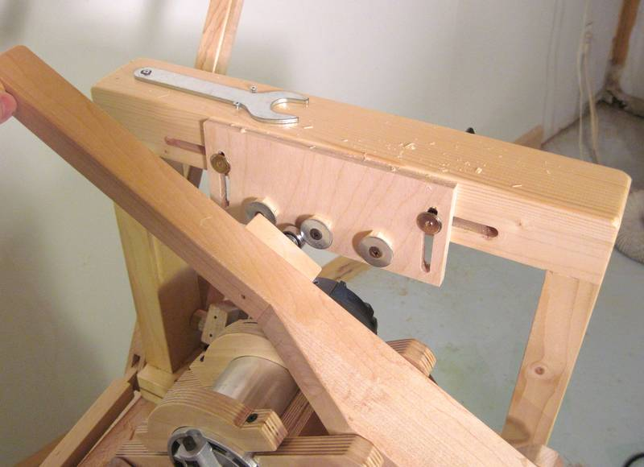

|
The trickiest part of building the pantorouter is building the pantograph mechanism.
I figured I might as well start with the most complicated part of that, which
is the router mount.
I used a 1:1 printout from my CAD model and traced it onto plywood to get the rough outline. |
| Because the relative positions of the holes for the pins and router are the most critical, I measured those with a ruler and compass. Paper templates can be very accurate, but I printed this template on a laser printer, and my experience is that laser printers, unlike ink jet printers, can't be trusted to be very accurate. |
|
The rear-most layer of the router support needs to have extra bits cut away from it
to accommodate the fat back end of the router. You will have to adapt this to match the
shape of your router. I tilted the bandsaw table to cut a cone shape to match the widening
part of the router, plus a few extra indentations for protrusions in the router. I'm trimming an
extra little bit off in this photo because the way I cut it the first time didn't leave enough room.
It would have been easier to make the router mount less deep so that the back layer is still on the cylindrical portion of the router, but it's better to make the pantograph as deep as possible. This gives it a bit more rigidity and strength and also makes the design less sensitive to slight inaccuracies of construction. |
| Gluing the back-most layer and the layer next to it together. It's critical to get the alignment of these two just right. I inserted the shaft as an alignment pin. I also pressed both pieces flat on my work surface to make sure they were aligned vertically. |
|
Getting the layers all aligned is tricky. My recommendation is to take the sandwich of
two layers and glue on the spacers without the last layer.
Let the glue dry, then glue on the last layer. That way, you don't have to get so many
parts aligned all at once.
That's what I ended up doing, but first I tried to glue it all together in one go, but something always got out of alignment before I got it all clamped, so I eventually gave up and glued the spacers on separately, then glued on the front layer. I was too busy making sure everything was aligned, so I neglected to take a photo, but this CAD rendering illustrates what I did. |
|
I'm checking the alignment of the back layer with the front layer with a square as I'm clamping it.
As with the steps earlier, I pressed everything down on my work surface to get all the pieces touching the work surface. This ensured all pieces were aligned in that direction. |
|
The other links of the pantograph are simpler. As with the router mount, it's best to
start by gluing the spacer to one part of the link, letting the glue dry, and then glue on
the second link. Otherwise, there are too many things that can slip out of alignment while
clamping it together.
I neglected to take photographs of this (too busy getting it all to line up),
so I made a CAD rendering showing gluing on just the spacer of the short link.
Once the spacer is on, glue on the other side piece. |
| Once the spacers and side pieces are on, glue another piece of 9 mm thick baltic birch on the back of it. Thickening up the link really increases its torsional stiffness, which helps keep the pantograph accurate. I'm gluing the backing onto the longer of the pantograph links in this photo. |
| Adding the spring-cam to the short link. This cam is just screwed in place after the link is assembled. Accuracy for this part is not nearly as critical as it is for the rest of the pantograph. |
| The spring cam for the long link is offset by a spacer to put it further back where there is room for the spring. Both the support block, and the spring cam are only screwed on. I'm looking through the hole in the support block to ensure that it lines up with the two holes in the long link as I'm attaching it. I'm tapping the screws with a hammer to transfer the center location onto the link before drilling the pilot holes for the screws in the link. |
|  | To attach the string to the link, I drilled a 1/4" hole though the block, and carved a cavity on the other side of it to provide space for the pin that the string loops around.  |
|
Here's the router mount, the long link and the short link, plus the operating handle which forms
the fourth link of the pantograph. Note that that I don't have the spring cam block and its
extension attached to the long link in this photo.
When you make the operator handle, for the two through holes, precisely mark and drill half-way from one side, and then drill all the way through from the other side. The small drills have a slight tendency to follow the grain of the wood, so drilling them all the way through from one side could lead to a lot of error by the time the drill comes out the other side. But if you drill half way from one side first, then, coming from the other side, the drill will line itself up with the existing hole and follow that. |
|
Initial trial assembly. The shafts should fit tight enough that they need to be tapped in with a hammer.
Grind a taper onto the ends of the shafts before assembly. This will help the shafts align
with the holes as you drive them in. It also prevents the shaft from scraping away wood
on the insides of the holes, which would eventually enlarge the holes.
There should be room for washers between the wooden pieces, but don't bother with the washers on initial assembly. You will probably take it apart and put it together a few more times before everything is done. |
| Here's the pantograph, with router mount, after initial assembly. When I took this photo, I hadn't yet drilled the screw hole to the mounting block (behind the spring cam, bottom right), nor had I made the support blocks that go under the pantograph. |
|
Next it's time to attach the mounting parts to the base plate.
I'm using my calipers to ensure that the bar with the mount towards the front is the right distance from the front edge of the wood. |
| Once I have my bar position exactly measured, I'm tapping the screws in with a hammer to mark the locations for my pilot holes. I'm using #6 drywall screws. A 9/64" hole (3.57 mm) is a perfect fit for the outside of these screws (they fit just snugly in that), so that my screws also serve as alignment pins of sort. I use the divots from tapping the screws as centers for my pilot holes. I drilled these with a 5/64" (2 mm) drill. |
| I used the same method to get the other parts lined up. I inserted my lower shaft without the pantograph to get the alignment of the support blocks that go underneath the pantograph just right. Again, I'm tapping the screws with a hammer to mark exactly where I need to drill the pilot holes. |
| The precision of hand made parts is never perfect, so it's best to mark which way the pieces went on. That way, there won't be additional positional error introduced by accidentally swapping the parts around later. |
| Pulling the shaft back out can be difficult. I found the best way to get it back out is to attach a small drill to the end of it. Then, slowly run the drill to spin the shaft while pulling it out. |
|
Space around the pantograph parts is pretty tight. This photo shows the long link (left) and the
short link (right) attached to the bottom shaft. I took this photo after I assembled everything and
then removed the control lever because I still needed to make some changes to it. It's
much easier to assemble the pantograph separately from the base normally, so you wouldn't necessarily
get this view.
Also note that the spring towards the top right of the photo is normally to the left, but with the link flipped all the way down, it was easier to get it out of the way by flipping it to the right. |
|
This photo shows the pantograph mechanism on it's base, without anything else attached. This was
still trial assembly. On final assembly, the base for the pantograph would already be attached
to the base below using the ball slides.
Without the router weighing the pantograph down, the springs will lift the pantograph roughly straight up. I experimented with using two springs on each side, one inside the other. I had originally calculated the spring force and cams to compensate for just the weight of the router, but then added the second spring to also compensate for the weight of the wooden mechanism. The two springs overcompensated, so the router always ended up at the top of its range of motion unless I pushed down on the handle. While this was comfortable to operate, it was awkward when mounting templates because the router would always be in the way when mounting templates. So it's better to slightly under-compensate for the total weight so that the router normally rests on the bottom. |
 |
a ball bearing attached to the control lever is used to follow the templates. Ideally, the ball bearing
should be twice the diameter of the router bit, so that the template will be exactly twice the
size of the final shape cut by the router.
But router bits don't always cut to the exact width as is nominal, and some sizes of ball bearings are hard to get. I was unable to get a 1" outside diameter ball bearing from a local bearing store. It seems precision bearings are mostly in metric these days. If your bearing is not twice the size of your router bit's cut, you can calculate the width for a tenon template as follows: Wtemplate = 2 * (Wtenon + Dcutter) - Dbearing |
| The ball bearing is mounted on a small block of hardwood, which in turn is screwed to the lever. I found that I needed different sized mounting screws to accommodate different sized bearings. The mounting screws in turn need different sized holes, so it's best to just leave the ball bearings mounted to the block, and swap out the whole block when changing bearing sizes. |
|
It's best to use a knock-down screw to mount the handle. You already need to get some of these screws
for the template mount, so might as well use another one here.
The handle is a piece of 1" (25 mm) dowel with a 1/4" (6 mm) hole in the middle of it.
The screw is screwed into an un-threaded slightly undersized hole in the wood.
Machine screws actually hold surprisingly well when screwed straight into unthreaded holes in hardwood.
I'ts your choice as to whether you want the handle to spin or not. Making the handle so it spins freely on the screw feels nicer, but it's probably safer if it doesn't spin - less likely to slip out of your hand that way. |
|  |
The photos above are for various stages of trial assembly. It is unlikely that your first assembly
of the mechanism will be your final assembly, so there is no point in assembling it with
the washers until everything else is all checked out for accuracy and alignment.
Getting the washers between the parts can be devilishly tricky. A workable method is to start with two pieces of shafting, one from either side. The shaft to the right is the one I want to use, and the one to the left is a temporary shaft to hold the washer in place. After hanging the two washers on the shafts, the middle part is pushed in between the shafts until it hits the shafts. The shafts are then carefully pulled back just far enough to allow the piece to slide in between, but not so far as to drop the washers. Once the middle piece is in place and its holes lined up, both shafts are pushed in a little bit to secure it in place. Next, the shaft from the right is pushed all the way through. This pushes the shaft from the left out, but with one shaft pushing the other through, the washer won't have the opportunity to fall out. |
|
While it would be possible to cut tenons without a plunge mechanism, for mortises, or any
sort of internal cavity, a plunge mechanism is essential.
The plunge mechanism works by moving the pantograph and template holder (essentially the rear half of the machine) towards and away from the stock on linear glides made from drawer slides An operating lever at the back of the machine activates the plunge mechanism. this operating lever is made to be sturdy enough to also serve as a sort of hand-hold for the left hand while using the main operating lever with the right hand. |
|
To allow the use of longer drawer slides, the plunging "sled" extends to underneath the stock
mounting table. Two stops are used to limit the amount of travel of the sled.
The stop towards the right in this photo limits the depth of plunging, while the stop to the left of it is used to limit how far back the router can move. Limiting how far back the router can travel in itself is not all that useful, but sometimes it's desirable to lock the plunge position in a particular position. This is done by setting both stops to the same position. A bolt protrudes into the slot of the stop on the left. The stop works by the bolt hitting the end of that slot. |
|
The plunge lever (top in this photo) has a bracket attached to it, which gives it
better support against its shaft. This makes the lever fairly rigid by allowing the
lever to only tilt left towards and away from the table but not towards and
away from the operator. This helps to provide a hand hold for the operator.
Shown below the plunge lever is the link that connects the bottom of the lever to the table. The bottom end of the lever is actually held in place by the link, while the lever's pivot moves with the sled. |
|
The elbow pin for the lever is made from a cut off knockdown screw. That screw is
the same type used to mount the templates and the knob on the operating lever.
The holes in the operating lever should be drilled to give a tight fit for the elbow pin, while the link fitting into the lever should have a hole large enough to allow it to turn freely about the pin. |
|
Templates are mounted on the frame behind the router. These are mounted with knockdown screws
through the frame, or alternately, with clamps from above.
I also put some small screws into the frame to hold my router collet wrench in place. You can see the handle of it in this photo. |
|
The template mounting frame has slots in it to allow the mounting bolts to be moved side to side.
Two plastic knobs are used to attach the screws, though wing nuts would work just as well. |
|
The corners of the template mounting frame are box joints with fingers 6 mm (1/4") wide.
These are quickest to cut with a screw advance box joint jig. But if you don't have one of these, it's possible to do a decent job cutting these out with the bandsaw, such as was done for some of the joints in this joint strength comparison |
|  |
A slot mortiser is very handy for cutting
the slots in the frame, although it's necessary to cut in from both sides to get
all the way through the stock.
Alternately, you could cut these with a plunge router, or by drilling a series of overlapping holes on a drill press. If you use the drill press method, it's important to use a brad point or forstner bit, and to clamp a drill press vise to your drill press table to rigidly hold the stock. Also, push the drill as far into the chuck as possible, and move the drill press table up so that minimum quill extension is needed to drill the holes. You will get cleaner results if you drill half way from both sides instead of all the way from one side.. |
|
This page is about turning over/under style full extension drawer slides into
linear glides for homemade woodworking machines.
It's a bit of work making the slides suitable for something like a wooden mortising machine but industrial linear ball glides start at prices in the hundreds of dollars each, so it's well worth the trouble. It's important to use over/under style drawer slides. Telescoping full extension drawer glides are becoming more popular today, but I have found that these have too much play. They need to have play in them so as to avoid jamming up if the drawers and their enclosures have a slight bit of mismatch to them. The balls between the innermost and middle layer of telescopic glides tend to have less play, but the middle layer would be difficult to mount, so they aren't as suitable as the older over/under style slides. |
 |
Check the material thickness of your slides. The good ones are made of sheet metal that is at
least one millimeter thick. If it's less than a millimeter thick, don't use them.
An 'S' profile bracket is spot welded onto the upper and lower rails to connect them together. The arrow in the photo at left points to the spot weld. It really doesn't show up very well from this side. It's much more visible from the other side, but to get at it we have to take the slide apart. |
|
There are stops integral to the slide that prevent it from being slid all the way apart.
I'm cutting one end (and the stop) off the outside (C channel) of the profile with an angle grinder.
Be careful to capture all the ball bearing balls that will fall out when you slide the slides apart. |
| I'm using a center punch to put a divot onto each spot weld. This will help guide the drill.. Otherwise, the drill ends up wandering a bit before it bites into the metal. |
|
Drilling out the spot welds. I'm using a 1/4" (about 6 mm) drill to drill away the welded
part of the metal.
I like to put a drop of oil on the spot where I drill before starting to drill. It helps lubricate the drill a little bit and makes cutting go slightly easier. It also makes smoke if the drill gets too hot. Be very careful when the drill breaks through the material. If you push too hard for the final bit of drilling, the drill may break through, grab the material, and pull it up. |
|  | With the spot welds drilled out, it should be possible to pry the pieces apart. Don't apply too much force, to avoid bending the rails. |
| There are more tabs inside the rail that prevent the ball cages from traveling the full length of the rails. These are best taken out with an angle grinder. I used to hammer these flat, but that might contribute to distortion of the rails, so grinding is probably better. |
|
Here's the slide parts prepared. The drilled out spot weld holes serve as mounting holes.
I started with 16" (40 cm) full extension drawer slides. The C-channel rails are 38 cm long
(after I cut the ends off), and the other rails are 32 cm long. I have the long ball cages
(top of the photo), plus parts of the ball cages for the other parts of the slider.
All that metal work with the gliders causes bits of abrasive and metal to get caught in the grease of the slides, so be sure to wipe all the grease off the slides and balls before reassembling anything. Also, don't forget to re-grease the slides before final assembly. I took the shorter of the ball cages and cut them off. I'll use a long plus a short ball cage inside each rail. The more ball cage inside the rail, the better. Seeing that I need less than 10 cm of travel out of my rail, I don't have to worry about my ball cages impeding slide movement. |
|
Next re-assemble the two rails, with just a few balls in the rails - maybe about five balls
on each side. Slide the rail back and forth to see if any part of the slide has play in it.
You can tighten up the rails a little bit by squeezing them in a vise. This operation is a little tricky. It's a matter of giving the rail enough of a squeeze to deform just slightly. Do this by squeezing the rail in the vise, then releasing it, and sliding it so that the balls were in the part that was just squeezed to check the tightness. The metal deforms elastically a fair bit before it actually bends, so it's not possible to check for tightness while actually squeezing the rail. It's a matter of squeezing, then releasing and sliding back and forth to check fit, then squeezing again, this time turning the vise slightly further, testing again, and so forth, until the rail has no more play. You may have to do this in several spots along the rail. The video (https://www.youtube.com/watch?v=mPkwIG7og44) may be helpful to see how it's done. |
|
It's very important that the rails be mounted parallel, and with exactly the same spacing on both
the base and the sliding part.
To get the spacing just right, take a piece of wood and cut a notch in it After making this cut, cut the piece lengthwise down the middle so that you have two spacers of exactly the same length. |
|
Place one of the rails in the correct position, then clamp the two rails so that
the right edge of each rail hooks onto an edge of the spacer. The spacer should only
touch the right edge of each rail. This ensures that the rails are exactly
the same distance apart, right edge to right edge (and thus also center to center)
Now mark the position of the screw holes through the holes in your rails. |
| Before removing the rails, label which rail was oriented which way on your wood. Seeing that some of the mounting holes were hand-drilled, it would be unwise to swap the rails around after they were used to mark the positions. |
|
Use the same method to mark the other half of the rails on the other piece. Note that
because we are using the spacers to measure right edge to right edge, the different widths
of the other half of the rails won't affect the actual right edge to right edge (as well as
center to center) spacing of these edges.
Use the larger C-channel (which forms the outsides of the sliders) for the top side of the sandwich. That way, dust has to go up to get to the balls, as opposed to falling down into the balls of the assembled rail. |
 | The rails are attached with countersink screws. These should mount low enough to still fit under the ball cages. If you run into problems, use the point of a larger 3/8" (10 mm) drill to make a countersink for the screws. That is to say, start drilling a larger hole, but only far enough for the point of the drill to cut a countersink around your mounting hole. |
|
Use machine screws to mount the rails. 3/4" long #8-32 machine screws are the perfect size for
mounting the rails in 3/4" (19 mm) thick plywood. A 5/8" (16 mm) hole drilled from the other side
provides room for the nut and washer.
With the rails mounted this way with machine screws, it's possible to tighten the screws after the rails are slid together. |
|
After initial trial assembly, you may want to remove the wider C channel rails to insert
the ball cages. The easiest way I have found for reinserting the ball cages with balls is
to hold the rail such that one set of balls faces up. These can then be placed into the
ball cage with gravity holding them in place. Next, sliding the ball cage into the
rail one ball position at a time and insert the balls from the bottom as the rail
moves along.
Be sure to insert the mounting screws in the rail before covering them up with the ball cages, or you will have to take it all apart again to get those screws in. You'll notice that the mounting holes are not in place in the photo - and I had to take it apart again to get them in after I took that photo! |
| The rails are held in place by 3/4" #8-32 machine screws. Use a nut driver or the screwdriver handle and socket from a socket set to attach a washer and nut on the other side of each screw. |
| The sliders, ready for mating. The bottom sliders are firmly screwed down and parallel, while the top sliders are only loosely screwed on. |
|
Carefully line up the sliders and push them together.
Beyond the first few centimeters, it will take a firm push to get the sliders together. This is because the ball cages will have bottomed out against the rearmost stops in the top C channels. Once this happens, the balls can't roll any further, and it's necessary to overcome their friction to slide the pieces all the way together. But they should roll back and forth relatively easily after it's been fully slid together. |
|
Slide the top platform back and forth a little bit to ensure it slides freely. But don't
slide it too far, or the ball cages will fall out!
Then tighten the nuts to lock the top sliders in place.
|
 |
Getting the alignment of the pantorouter just right is critical. The most important aspect
of alignment is to ensure that the router's axis is parallel to the plunge direction
and level with the table.
If the router's axis is out of alignment, it's easy to get steps in the routed tenon, as shown at left. This was the result of a rather subtle misalignment of the router axis. |
|
The best way to check the router's axis is to get a straight metal shaft and put it in the
router collet. I'm using a 1/4" shaft. A 1/2" shaft would be even better.
When putting a shaft in the router, spin the router's collet a bit to see if the shaft wobbles, just to ensure that your shaft is straight and properly mounted in the router. Do NOT turn on the router with the shaft in the collet. An unbalanced shaft at 10,000 RPM could cause serious problems. Best to make sure your router is unplugged before you put a shaft in the collet. The picture at left shows a subtle misalignment. Move the router side to side along the width of the table to see if the misalignment direction changes. If the misalignment direction doesn't, it's possible that the shaft that your pantograph is mounted to is misaligned. A more likely source of misalignment however is the problem is with the pantograph or the router mount. |
| Before taking the pantograph apart, it may be good to do a few more checks with the assembled unit. An obvious source of misalignment to look for first is to see if the links have any "racking" in them the way they were put together. Note how the gap between the links and the operating lever are at the top right and bottom left. Try to correct for that before proceeding. If the pantograph mechanism really "wants" to go into a racked configuration like this, you probably have some twist or skew in some of your links. |
|
There are a few more checks that can be done before taking the whole mechanism apart.
You can check that the pins are perpendicular to the table's edge using a framing square and
a thin ruler. The ruler is pushed into the gap between the parts until it hits the bearing shaft.
This check is much easier if you haven't installed the washers in the pantograph yet. But overall, if you find that your pantorouter has alignment issues, it's much easier to check the links individually once you have taken your pantograph apart. |
|
You can check for twist in your links by inserting two steel shafts in the holes and resting them
on some pieces of wood on top of a flat surface as shown. Check that the link rests on all four points
on the pieces of wood and doesn't rock back and forth. Also do this check by inserting two
shafts in the hole of the control lever.
You don't need a machinist's granite slab to check this with - your table saw or jointer should be flat enough. But if you want a really flat surface, modern glass top cooking stoves are amazingly flat. I neglected to take photos of these checks last time I had it apart, so I'm using CAD drawings to illustrate some of the steps. |
| Check that the spacing between the shafts is the same on both ends. A quick check with some calipers should do the trick. For the long link, regular calipers won't quite reach, so measure it with a machinist's ruler. If it's out by a millimeter, that's too much. If you can't see a difference eyeballing it with a ruler, it's close enough. |
|
Use a square to check that your links don't have any skew in them. A machinist's square is good for
this type of check. If you don't have a machinist's square, use a framing square (the kind that is
made of one piece of thick sheet metal). Framing squares, in my experience, are on the whole quite
trustworthy.
Use this method to check the short link, the long link, and the control lever. |
|
The link that mounts the router is more difficult to check. Being the most complicated link, it's also
the most likely source of misalignment.
I'm doing essentially the same check as the first of the CAD drawings above to check for twist in this photo, but my front piece of wood is bigger and has a notch cut out of it, while the back is two separate pieces of exactly the same height, to accommodate the router motor. |
 |
Here I'm checking for skew, again with the router still in place.
I couldn't put the square straight against the front of the link because the router gets in the way, so I made some spacers to hold a piece of wood the same distance on both sides. This check would be easier to do with the router removed, but I wanted to leave it in place for the next check. It is however necessary to remove the router to check that the spacing of the pins is correct front and back. |
|
Next I'm checking that the router's axis is perpendicular to the link. I'm using the same spacers
from the previous step to get the piece of wood that I'm measuring against parallel to the
router mount.
Also check that the router's collet is the same distance from the pins on either side. If it's too hard to measure to the collet, then measure to the edge of the router's body. |
|
Now checking that the router isn't tilted up or down with respect to its mount.
I'm using the same blocks of wood that I used in previous steps to support the router mount. With the blocks all the same height, my router's axis should be exactly parallel to the table. I put another piece of wood in front of the shaft in my router. The edges of this piece of wood are parallel with the table. If you look carefully at this photo, you can see that the shaft tilts slightly up towards the right. You can click on the photo to enlarge it. |
 |
On my machine, I found the links to be accurate enough, but one of the holes I had drilled in the
router mount was off by a millimeter. This tricky to fix. A straightforward
approach would have been to just make a new part, and if it had been one of the simpler links,
that's what I would have done. But with the router mount being so complicated, I didn't
want to go to the trouble of making a new one.
Essentially, a new hole needs to be drilled, but this new hole will overlap with the old hole. The first step is to glue something in to the old hole to completely fill it, so that a new hole may be drilled. |
|
Drilling a new hole partially overlapping the filled hole is a challenge. The drill may be inclined
to drift towards or away from the filled hole, as the filled hole is not the same as the
surrounding material. If you need to re-drill a hole, the key is to do it
with maximum rigidity in the setup.
Push the drill bit as far into the drill press chuck as possible so that there is only a short piece sticking out. This cuts down on flexing in the drill. Bring the stock up so that with the drill press's quill fully retracted, the drill is almost touching the wood. Drill press quills tend to have more play in them the further down they extend. Also, use several clamps to rigidly clamp your work piece to the drill press's table, and make sure the table is securely locked and level. I swiveled the drill press table off to the left a little bit so that I could better clamp my part onto it. When you drill, set the drill press for a relatively high speed and drill slowly. Back the drill out after every few millimeter of drilling in to clear out the chips. |
| I also found that my router was not quite perpendicular to the mount in the jig. A drum sander would be ideal for opening up the mount to move the router. I don't have a drum sander, so I used a sanding drum in my drill press to sand away material where I needed to. |
|
I needed to add shims on the side opposite to where I sanded. For shimming a fraction of
a millimeter, I find that UHMW tape is very useful. Each layer of UHMW tape adds about a
quarter to a third of a millimeter in thickness (or about .010"), and the tape is fairly rigid.
I applied about three layers of UHMW tape to the spot shown in the photo at left.
If you need to adjust the router alignment, it will probably take several tries, repeating the checks listed above every time. |
| Putting the pantograph back together for another check. I still assembled it without the washers in place when I took the photo. I still needed to take everything apart one more time to vanish everything. The axis of the router was sufficiently parallel with the table along its full side-to-side range of motion that I decided it was close enough. |
 |
But it was a Sunday and the store was closed. So I made a hold down clamp out of wood. Though not as sturdy as one made of cast iron, it has a greater reach, which is very useful when working with wide stock. |
| I started by milling a cavity into a piece of wood to fit around the top part of the C-clamp. I milled out this cavity with a router using the new machine that I'm working on (I'll write about that machine some other time), but my slot mortiser would have done just as well. |
 | I had to remove the bar handle to fit it in the block. It took a few iterations to get it to fit perfectly. I was lucky the that paint rubbed off on the wood just a bit, so I could tell where I needed to carve away more wood after each fitting. |
 |
Having come this far, I figured my experiment was worth destroying the C-clamp for.
This really wasn't a very good clamp, but what I liked about it for this application is that it had a very coarse ACME thread, so that it doesn't take many turns to open and close it. |
 | Two drywall screws next to the clamp hold it in the cavity. I originally thought I might mount it by drilling some holes in the clamp, but judging by the type of sparks I got when I cut it with an angle grinder, I realized that the steel on this clamp was relatively hard and would have been difficult to drill. Fortunately, drywall screws, with their relatively wide flat head, were able to hold it from the side. |
 |
One of the reasons I didn't use that clamp much was because the end of the screw is
just a piece of sheet metal. The sheet metal has sharp edges and doesn't spin
freely enough, so it marks up the wood as it's tightened. At this point I was
tempted to cut up one of my better clamps to avoid that problem, but the
cavity I carved in the wood only fit this particular clamp.
So I figured making a new pressure pad was the easier route.
But how? I don't have a metal lathe to shape the end of the screw. So I spun the shaft up in my drill press, and used an angle grinder to shape a knob on the end, plus a groove behind it. I'm really surprised how well this crude technique actually works! |
 | Two nails in the groove could hold the pressure pad onto the end of the screw |
|
I used a block of maple for the new clamp head. Instead of two nails, I ground the head
off a nail and then bent it into a U shape.
There's nothing in the bottom of the pressure pad to push against the metal, it's just the end of my bolt pushing against the wood. I used hard maple, so that should help. But this hold down clamp won't see crazy amounts of pressure, so this should do. The photo is from when I checked the fit. I rounded the corners on it after that photo was taken. |
| I had to destroy the original bar that served as a clamp handle to get it out. I had to take it out to be able to inset the clamp into the cavity. I also would not have been able to mount the screw in my drill press without taking the handle out. So now I had to make a new handle. I used a piece of maple, with a hole just slightly smaller than the end of the shaft. I pressed the end of it into the block and then drove a 1/8" (3 mm) diameter pin through the hole to go through the hole in the shaft. |
 |
So now I had a bar with a hold down screw on one end. This bar needs to be mounted some
distance above the work table on my machine. I made a spacer to fasten this bar
above the table.
I drilled a hole for a bolt right on the edge of the spacer block. Basically, the bolt that holds the clamp might as well be as far forward as it can be, so I'd get maximum leverage from the bolt. |
|
With my drill partially breaking out the front of the slot, I opened that slot
along its length on the bandsaw (looks better that way). I also added a dowel pin
to help align that block with the bar.
The bar can be put on the block in two different positions to vary how far it extends. Mounting the bar and block on the table holds them together, so there's no need to have any other means of attaching the block to the bar. |
 |
I made another knob to go on the end of the bolt that holds the hold down in place.
I cut it out of 3/4" (19 mm) Baltic birch, and mounted a T-nut in it.
I figured it would be best if this one had a different shape as the handle for the screw. That way, I'd be less likely to absent mindedly loosen the whole hold down when I only meant to loosen the stock. |
|
With all the work adapting the cheap Chinese clamp to make it suitable, it wouldn't be any less work to just start with a piece of 1/2" threaded rod instead. That way it would not be necessary to carve a complicated cavity for the clamp, and a simple T-nut would suffice. The one advantage of having started with the clamp is that it has a coarse ACME thread. That means this clamp tightens with fewer turns and easier than with a 1/2" threaded rod.
|
|
With the pantograph reducing 2:1 from the template to the router bit, using a guide bearing that is
exactly twice the diameter of your router bit will reproduce the shape of the template exactly.
Mostly, I use a 3/4" outside diameter bearing and a 3/8" router bit. Larger bits are better for cutting tenons, but the 3/8" bit is also useable for cutting mortises or cutting between double tenons. Unfortunately, getting a bearing that is twice the size of your router bit is not always possible. Ball bearings are mostly in metric units. Even bearings with hole sizes in inches tend to have metric outer diameters. But router bits in Canada and the US are all sized in inches. |
|
If your bearing is not exactly twice the diameter of your router bit,
you can calculate the required thickness of
the tenon template using this formula: Ttemplate = 2 * (Ttenon + Dcutter) - Dbearing
For example, if you want to cut a 3/8" tenon with a 1/2" bit and a 26 mm bearing: |
|
The same formula can also be applied to work out the width of the template:
Ltemplate = 2 * Ltenon + (2 * Dcutter - Dbearing)
I found it easiest to use a round object such as a washer to mark the round part on the end of the tenon template, then cut that out approximately with a bandsaw, and then use a sander to smooth out the curve and bring it up to the line. With the tenons half the size of the template, any inaccuracies in the template will also be cut in half. |
| Of course, getting it completely right may require some experimentation. If you only need to make a small adjustment to a template, you might try shaving it down a little bit with a shoulder plane if the fit is too tight, or adding some tape to the template to increase it's size. I like to use UHMW tape to shim things up with, as it's fairly thick and rigid. The tape is a milky transparent, so it doesn't show up very well in the photo at left (click the photo to enlarge). |
|
Making a template for a mortise is much more straightforward. It's just a matter
of making a straight track that the bearing can roll in. With the springs under-compensating
for the weight of the router, the bearing has a natural tendency to stay in the track, especially
if one rests one's hand on the operating lever.
On the template at left, the block on the near end of the track is screwed on, while the other block is held on with a small C clamp (obscured by the operating lever in the photo). This way, I can make adjustments to how long a mortise I want to cut with the machine. |
| It's easy to mount a template at a slight angle by accident. Drawing some horizontal lines on the back of the template is useful as a quick visual check when mounting the templates. It's also a good idea to trace a line across the back for some types of joints that you make often so it's easier to get the template at the same height again. |
| Where the machine really shines is when making more complex joints, especially multiple mortise and tenon joints. Getting a double tenon joint to fit just right can be tedious. But with a machine like this, once you make a set of templates for a joint, it's easy to reproduce it perfectly time and time again. |
|
Here are my quadruple mortise and tenon templates.
I measured the placement of each piece of wood with calipers from the edge as I glued it. With the templates twice the size of the final joint, I get some leeway in terms of accuracy, but I still make it as precisely as I can. The multiple mortise template on the right is mounted so that the mortises are horizontal, so that the mortises will be parallel to the grain of a piece of wood clamped horizontally onto the table. Each track in the mortise template has an opening so that the bearing can be pulled out of the track and then put into the next track. The vertical range of motion of the machine is just barely enough for the quadruple mortise template, though I had to cut a corner off the template as the router motor hit the bottom edge of the template while I was cutting the topmost mortise. |
|  | Gluing the templates is tricky. Wet wood glue acts as a lubricant, and clamping the pieces down has a tendency to move them. So instead of clamping, I weighed down each piece of wood with something heavy. |
 | I also made a multiple dowel template. Making a template perfectly round is tedious. I had some 1 1/4" washers, which were perfect for a template for 5/8" dowels. And if I use a 1/2" bit instead of a 3/8" bit on my router, this template makes 1/2" dowel ends. |
|  | There are spacers behind the washers to bring them out far enough for the bearing. |
|
Here's the integral dowels produced by that template. Though it looks like three dowels sticking
out, those are actually part of the piece of wood.
A key to getting a clean cut (click image to enlarge), especially around the edges, is to always do a "climb cut" with the router. Climb cuts are normally considered "unsafe" because the router has a tendency to pull itself into the stock. But the pantograph mechanism gives me a lot of mechanical advantage from the handle to the router bit, so I haven't had any issues. With a climb cut, the cutter edge is always cutting into, as opposed to out of the stock. This prevents any tearout at the edges. I also found that I get a cleaner cut on my final dowel with a climb cut. |
 |
Here's experimenting with a template for cutting the pins of a dovetail joint.
Unlike conventional dovetails jigs, I don't have to have my router bit sticking through a guide bushing. This means I can use bigger, longer bits with 1/2" shanks, so that I can cut joints that are larger and deeper than with a conventional dovetail jig. My pantograph is limited to an 8" range of motion side to side, so anything wider than that would require cutting as multiple sections by repositioning the stock. There isn't anything to get in the way on either side so there's no limit to how large the stock may be. The main difficulty with very large stock would be in clamping and aligning. The other advantage of not relying on guide bushings is that I could also cut dovetail joints much finer than what is possible with a conventional dovetail jig, again, because I'm not constrained by the need for my guide bushing large enough to fit around the router bit's shank. |
| Hand tool enthusiasts like to make dovetail joints with geometries that can't be cut with a dovetail jig, which servers to prove that the joint was hand cut. But some of these joints can be cut with the pantorouter. The "pins" side of this joint was cut with a 1/4" router bit on the pantorouter. This leaves the corners of my tail cavities round, so some hand tool work is still needed to make it look like one of those joints that was "hand cut". Except that this method is less work and more accurate. |
|
The possibilities are nearly endless, it's all a matter of what templates one makes.
At left is an experiment with a heart shaped through tenon. It was only a quick experiment and not very accurate. But you get the idea. |
|
People have been asking about "that piece of wood" I had clamped to the table in some of
my videos about the pantorouter.
After initial design and testing of the machine, I made a sort of square to use as a fence on the pantorouter, which is now part of the plans. The fence is a simple piece of birch plywood with two slots cut into it, and a piece of wood along one edge to align it with the table. One slot is used for clamping the square down to use it to align the stock for making tenons. |
| The other configuration of this square is to use the other slot, and bring it in from the side to use it as a back stop when cutting mortises. |
 While working my pantorouter, I needed another hold down clamp, similar to one of these
drill press hold down clamps I had bought from
While working my pantorouter, I needed another hold down clamp, similar to one of these
drill press hold down clamps I had bought from